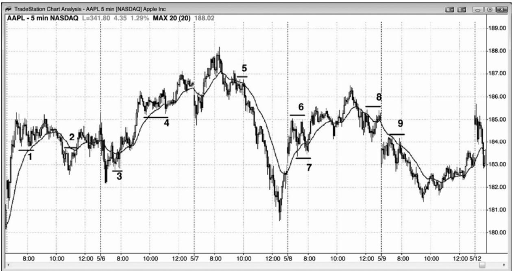
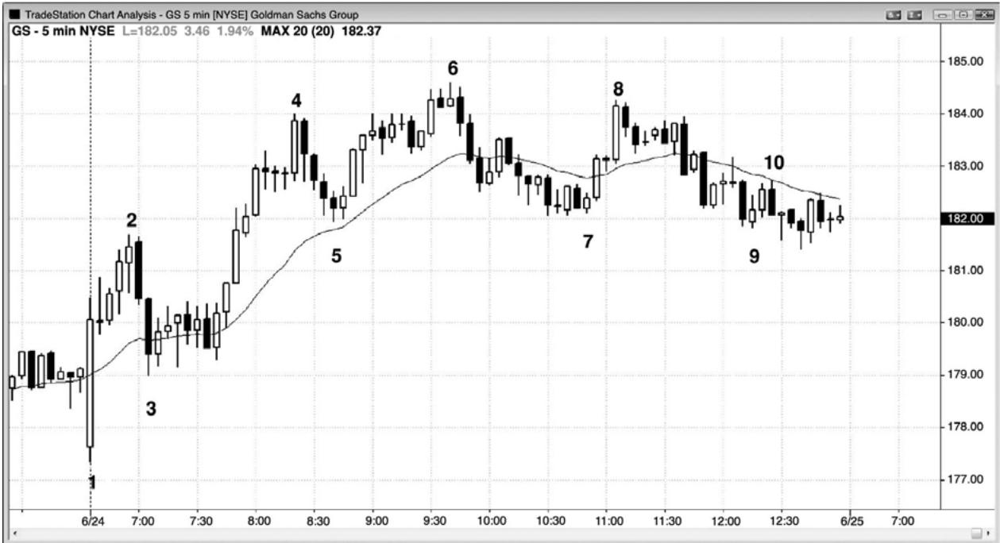
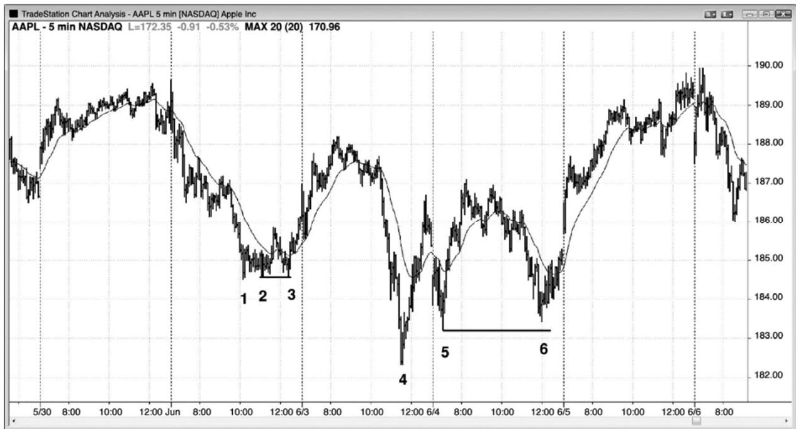
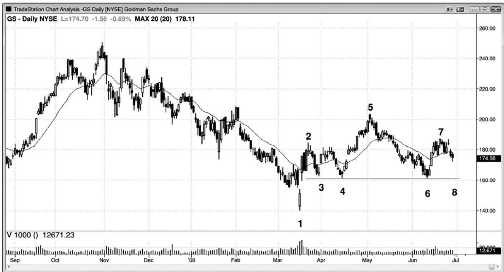
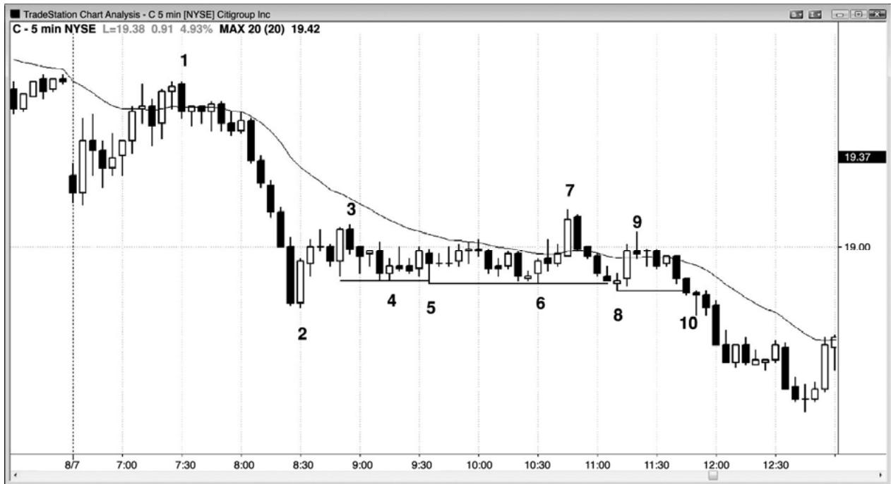
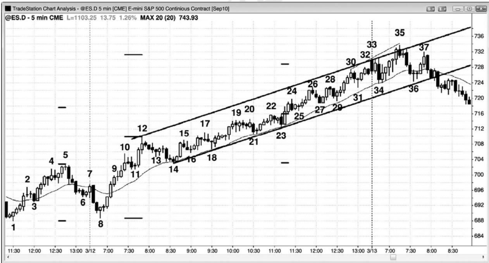
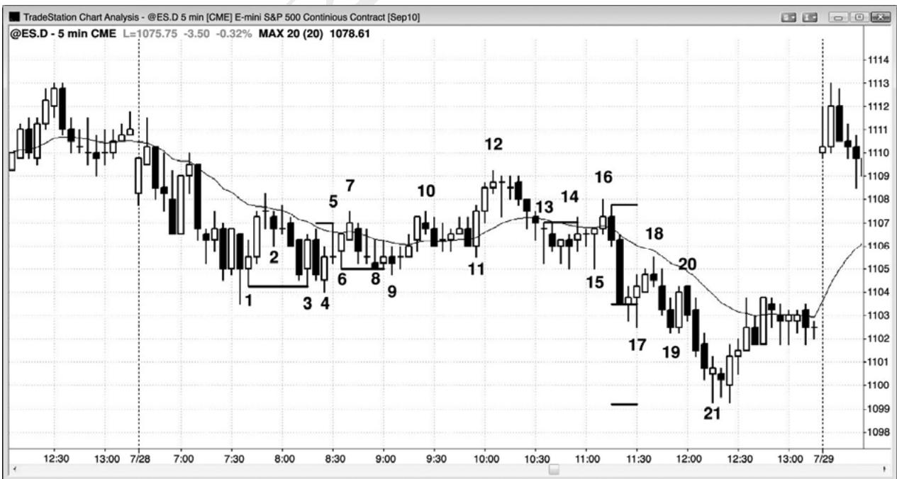

第12章 双重顶空头旗形和双重底多头旗形¶
第 12 章 双重顶空头旗形和双重底多头旗形
多头趋势常常以双重顶结束，空头趋势常常以双重底结束。由于多头趋势中的回撤是小型空头趋势，所以这种小型空头趋势可能以双重底结束。因为它是多头趋势中的一个回撤，所以它是一个多头旗形，可以被称为双重底多头旗形。它是多头趋势中的两条腿下跌，所以是一个高点 2 买进架构。它是特别可靠的一类高点 2 买进架构，所以我一般称之为双重底，以便与其他高点 2 形态相区分。类似地，空头趋势中的回撤是空头旗形，是小型多头趋势，那个小型多头趋势可能以一个双重顶结束。如果那样的话，那个双重顶就是一个双重顶空头旗形。
在多头趋势中，多方常常会把他们的保护性止损跟踪调整至最近的更高低点下方，因为他们希望趋势继续创出更高低点和更高高点。形成双重底多头旗形的部分原因是多头在保护他们位于最近波段低点下方的跟踪止损。如果市场跌破最近波段低点，那么交易者们会认为多头趋势较弱，而且可能结束。那将形成一个更低低点，他们担心接下来可能形成一个更低高点，而不是一个新的高点。如果那样的话，那么市场可能正在形成一波两条腿调整（大型高点 2 买进架构），或者甚至是趋势反转。因此，如果多头对趋势深信不疑，那么他们将在最近波段低点以及略高于最近波段低点的价位重仓买进，制造一个双重底多头旗形。反过来在空头趋势中也是正确的，空方希望市场不断形成更低高点和低点。很多人会把他们的保护性止损跟踪调整至略高于最近的更低高点，强势空头常常会在向那个最近更低高点的任意反弹积极做空。结果会形成一个双重顶空头旗形。
多头或空头趋势中的任意回撤都可能转变为双重底多头旗形或双重顶空头旗形。有时，双重底多头旗形和双重顶空头旗形会出现在同一回撤中，于是这个小型交易区间将把市场置于突破状态。如果市场向上突破，那么交易者们会把那个形态看作一个双重底多头旗形，如果市场向下突破，那么交易者们会把它看作一个双重顶空头旗形。如果该形态之前有明显的向上或向下的动能，那么会增加那个交易区间成为延续形态的几率。举例说明，如果交易区间之前是一波强上涨运动，那么向上突破就可能出现，交易者们应该在市场从区间底部的双重底向上反转时买进。如果接下来市场向上突破，交易者们将把那个形态看作一个双重底多头旗形。相反地，如果在交易区间之前市场处于一个空头尖峰之中，那么交易者们应该准备在该形态内的双重顶向下反转时卖出，预期市场向下突破。如果那种情况发生，交易者们会把那个交易区间看作一个双重顶空头旗形。
当出现一轮多头趋势，然后又出现一波两条腿回撤，且回撤中有一条腿是一个看起来很普通的空头尖峰时，空方将希望市场不会向上超越第一条下跌腿之后的更低高点。他们将会做空，尝试令趋势反转进入空头趋势。多方的想法总是相反，因为交易是一种零和游戏—对空方好的形态，对多方是不好的形态，反过来一样。第二条下跌腿之后的向上反弹常常会在那个更低高点或略低于那个更低高点的位置停止。那个更低高点的位置停止。多方希望反弹向上超越那个更低高点，猎杀空方的保护性止损，然后到达一个新的高点。空方积极做空，防止那种走势形成，常常会在那个更低高点下方一两个跳动及那个更低高点处重仓做空。这便是市场在向下反转前常常会一路上涨至更低高点的原因。那是空方的最后防线，在那个更低高点处，他们达到最强状态。如果空方获胜，市场向下反转，那么将产生一个双重顶空头旗形，随后常常形成一条空头通道。在对更低高点的更低高点和双重顶测试之后，空方接下来想要一个更低低点，然后是一系列更低高点和低点。
无论从第二条下跌腿开始的向上反弹是否会在那个更低高点上方、下方或恰好在那个更低高点停止，如果市场接下来再次下跌，那么可能与回撤底部形成一个双重底。如果形成一个合理的买进架构，交易者们将会买进，认为这个双重底是一个多头旗形，接下来将是多头趋势中的一个新高。很多在两条腿下跌底部买进的多头，将会把他们的保护性止损设在略低于那个回撤处。如果市场开始上涨，并再次反转下跌，那么多方将会在第一条下跌腿的底部上方一两个跳动处积极买进，尝试令市场向上反转。他们不希望市场在更低高点之后形成一个更低低点，因为这是空方力量的征兆，那将增加市场下跌或横盘而非上涨的可能性。如果他们成功，那么他们可能会令多头趋势恢复。如果市场跌破那第一条下跌腿的底部一两个跳动，那么它可能会猎杀多方的保护性止损，然后突破进入一波向下的测量运动。
两条腿回撤在任意趋势中都很常见，他们常常呈水平形态，两条腿大致在相同价位结束。有时，在趋势恢复前，回撤可能持续几十棒。横盘运动常常是以小型腿开始和结束的，它们的极点价位非常接近（第二个尖峰常常略微过冲或欠冲第一个尖峰）。从每个腿形开始的趋势恢复都是尝试令趋势延伸。举例说明，如果有一轮空头趋势，然后出现一波回撤，然后市场再次下跌，那么就是空方在推动市场向更低低点运动，是空头趋势的延伸。然而，相反地，如果市场在空头低点上方找到的买家数量多于卖家，形成一个更高低点，那么空方驱动市场向新低下跌的尝试就失败了。如果这第二条上涨腿没有引出一轮新的多头趋势，空方能够再次控制和制造一个低点 2 做空入场，那么他们将驱动市场再次下跌，试图令市场向新的低点突破。如果在与之前大致相同的价位，多方再次战胜空方，那么空方就已在同一价位失败了两次。当市场两次尝试做某件事情而失败时，它通常会尝试做相反的事情。那两次下推在大致相同的价位结束，略高于空头低点，形成一个双重底多头旗形。它是拥有两个底而不是一个底的一个更高低点。它是一类失败的低点2，在这种情况下，是一个可靠的买进信号。
P122
类似地，如果多头趋势中出现一波下跌，但接下来多头两次控制市场，努力令市场上涨超越原来高点，却以失败告终，那么就是空方成功驱动市场再次下跌，他们制造了一个更低高点。如果多方再次获得控制权，再次推动市场上涨，他们试图制造一个新的多头高点，在之前相同价位附近，空方再次战胜多方，那么将会形成一个双重顶。由于再次市场试图突破至新的多头高点而失败，所以很可能会努力向相反方向运动。在原来高点附近，没有足够的多头以制造一个新的高点，于是市场不得不下跌以寻找更多的多头。市场没有形成一个多头趋势中的成功的 ABC 回撤（高点 2 买进架构），回撤未能找到足够多的多头以制造一个新的高点，结果形成一个更低高点，该更低高点由一个双重顶构成。
这种形态常见于尖峰和通道趋势中。举例说明，如果出现一个上涨尖峰，然后出现一波回撤引出一条多头通道，那么市场最终通常会向下调整测试通道底部，在那里，市场再次努力向上反转。这一对通道底部的测试与通道底部一起形成一个双重底，通道底部可能是在几十棒之前，由于是在多头趋势中（一轮尖峰和通道多头趋势），所以它是一个双重底多头旗形。
头肩延续形态是另一个变种，右肩两侧的尖峰形成双重顶或双重底。
不像多头运动顶部的双重顶是反转形态，已经行进中的空头趋势中的双重顶空头旗形是一种延续形态。两种双重顶都会引起下跌。由于双重顶空头旗形的作用像其他任何双重顶一样，所以很多交易者简单地把它叫做双重顶，认为它就是已经向下反转的市场向上调整运动的顶部。类似地，双重底多头旗形是上涨运动中的延续形态，不是空头趋势底部的反转形态。双重底多头旗形就是一个双重底，像所有双重底一样，它是一种买进架构。
新多头趋势中的第一个更高低点常常表现为双重底多头旗形的形式，新空头趋势中的第一个更低高点常常表现为双重顶空头旗形的形式。
当双重顶空头旗形或双重底多头旗形失败，市场向错误方向突破时，注意观察看突破是否会成功。如果突破没有成功，在一两棒内失败，那么市场通常会形成一个楔形旗形的变种。举例说明，如果一个双重底多头旗形形成，但市场立即反转，下跌至双重底下方，那么可能出现一波向下的测量运动，其高度约等于失败的双重底的高度。这常常是一个做空架构，交易者们在双重底下方1个跳动处使用卖出止损单入场。然而，如果向下突破在一两棒内失败，市场向上超越前一棒高点，那么这是一个三推底部入场（作用等同于楔形）。形成双重底的两棒形成前两次下推，失败的突破是最后一次下推。任意楔形的关键特征是三推，而不是完美的楔形形状。

P123
顺势多头旗形形成一个做多入场，将买进止损单设在前一棒高点上方 1 个跳动处，初始保护止损位于那条信号棒低点下方 1 个跳动。入场棒收盘后，如果它是一条趋势棒，那么止损就被移至入场棒下方 1 个跳动。如果它是一条小型棒，就不要把止损调紧，直到在你的方向上出现趋势棒。
虽然双重底是空头市场底部著名的反转形态，但这些旗形在多头市场中是顺势架构。通过结束回撤，回撤是小型空头趋势，它们反转了它，但最好认为它们是顺势形态。
如图 12.1 所示，棒 2 处的双重顶空头旗形失败，结果成为一个可交易的做多架构（成为一个小型头肩底）。
棒 7 是小型交易区间内一个双重底多头旗形架构，该小型交易区间刚刚形成一个双重顶空头旗形。由于截止交易区间的动能是强势上涨，所以几率偏向于该形态会向上突破，成为一个双重底多头旗形，而不是向下突破，形成一个双重顶空头旗形。向上或向下突破后的最低目标是一波基于小型交易区间高度的测量运动。
图 12.2 双重底多头旗形

如图 12.2 所示，高盛（GS）从棒 3 到棒 4 形成一个多头上涨尖峰，然后回撤至棒 5。接下来是一条上升通道，到棒 6 结束，然后回撤至通道底部附近。这与棒 5 和棒 7 形成一个双重底多头旗形，尽管两者之间有一个棒 6 更高高点。棒 5 是多头趋势中的最后一个更高低点，棒 7 可能是空头趋势或交易区间的第一个波段低点。在这种情况下，如果棒 6 没有被从棒 7开始的反弹超越，那么市场可能会形成一个头肩顶。无论如何，双重底多头旗形都是可靠的架构，至少可以做刮头皮交易。另外，由于大部分头肩顶像所有顶部一样都会失败，变成延续形态，所以一直在多头趋势中任意交易区间的底部附近买进，总是明智的。在趋势中，大部分反转形态失败，大部分延续形态成功。
P124
棒 3 低点之后也形成一个小型双重底多头旗形，是由棒 3 后面的第三棒和第七棒构成。这是一个失败的低点 2 做空架构，常常成为双重底多头旗形。
这张图表的更深入讨论
在图 12.2 中，棒 1 是一条强多头反转棒，它反转了对均线的向下突破，以及进入昨日收盘的小型交易区间。市场形成一个双棒空头尖峰下跌至棒 3，然后市场横盘整理，多空双方为通道的方向而战。因为那个多头尖峰比较大（有些交易者认为那个尖峰结束于棒 1 高点，有些交易者认为它结束于棒2），所以几率偏向于多方会制造一条多头通道，空方在尖峰下跌后获得坚持到底的尝试将会失败。棒 3 后面的双重底多头旗形是一个更高低点买进架构，引出一条楔形通道，结束于棒 6。由于它是一个楔形，所以很可能形成两条腿下跌，由于它是一个多头尖峰和通道，所以市场也很可能测试棒 3 区域，因为通道是从那里开始的。有时，测试要花费一天多的时间，但是一旦测试完成，市场通常会努力与通道低点形成一个双重底。因为截止棒 2 和截止棒 6 的上涨尖峰都很强，所以市场不大可能会跌回棒 3 区域，相反地，市场可能形成一个楔形多头旗形，棒 5 和棒 7 是关两个下推。事实上，那就是这里发生的情形，GS在次日向上跳空。

在图 12.3 中，棒 2 和棒 3，棒 5 和棒 6 形成双重底多头旗形。棒 3 和棒 6 略微过冲它们的第一条腿，但形态极少是完美的。
当双重底刚好形成于趋势低点附近时，比如棒 2 和棒 3，该形态常常是一个小型上涨尖峰和交易区间，它常常是更高时间框架图表上的一个ii形态。
从棒 4 开始的上涨运动几乎垂直，所以是一个尖峰。从棒 5 开始的上涨运动是通道，尽管它也近乎垂直。这是一个尖峰和高潮型的尖峰和通道多头趋势。在尖峰和通道形态的通道期过后，市场通常会测试通道底部，形成一个双重底多头旗形，比如这里在棒 6。此后，市场通常会向上反弹，幅度至少为交易区间的四分之一。在那以后，该形态已经完结，交易者们应该寻找下一个形态。
从棒 5 开始的上涨运动，在从棒 4 开始的上涨运动的顶部附近停止。有些交易者把这看作一个双重顶空头旗形而做空。然后市场下跌，于棒 6 在棒 5 回撤价位附近找到支撑。很多双重顶空头在市场测试棒 5 低点时获得了结，强势多头通过积极买进来防御那个低点。这形成一个双重底多头旗形信号。向上突破大约形成一波向上的测量运动。

P125
如图 12.4 所示，GS 的日线图正在形成一个头肩空头旗形或双重底回撤。市场形成一个截止棒2的上涨尖峰，然后回撤至棒3一个更高低点，几周后，那个更高低点在棒4被测试。然后市场进入一条多头通道，到棒 5 结束，然后在棒 6 测试通道底部，棒 6 与棒 4 低点形成一个双重底多头旗形。最低目标是向上反弹从棒 5 到棒 6 下跌幅度的 25%左右。
对于空方，左肩是棒 2，右肩是棒 7。空方希望市场向下突破经过棒 3、4 和 6 低点所画的颈线。然而多方看到的是由棒 4 和棒 6 形成的那个双重底，希望市场向上反弹。他们会在向棒 8 的回撤买进，如果他们成功地令市场向上反转，那么这将成为一个双重底回撤做多架构。
对于在棒 7 右肩下方提早做空的空头，如果市场向上超越棒 7 右肩，那么他们不会等待市场向下突破颈线，而是买回他们的空头头寸。那将制造一个失败的头肩顶，上涨的最低目标是一波测量运动，高度为从棒 6 低点到棒 6 高点。
截止棒 2 的反弹非常强劲，足以让大部分交易者们相信市场不久将涨得更高（他们认为市场已经翻转为总在场内多头）。这使得交易者们在几周后形成的双重顶空头旗形做空时犹豫不决。然而，由于他们正在可能的底部棒 1 和截止棒 2 的强势反弹之后寻找更高的价位，所以他们在棒4双重底多头旗形买进。

在图 12.5 中，市场形成一个五棒空头尖峰，紧接着在棒 2 形成一个双棒多头尖峰。
P126
棒 4 试图与棒 3 前一棒以及棒 2 后面的多头入场棒形成一个双重底多头旗形。棒 5 和棒6 也试图完成底部。市场经常会向下突破第一个底部 1 个跳动左右，把多头套出，空头套入，比如在棒 5。棒 5 是对棒 4 低点的假突破，棒 6 是对那个假突破的精确测试，是一个双重底多头旗形的一条外包上涨入场棒或信号棒。它引出了棒 7 对区间顶部的突破，而该突破很快在一个双棒反转中失败。
在棒 8，市场第二次向下突破交易区间 1 个跳动。重要的是要认识到，即使市场仅跌破那个低点 1 个跳动，交易者们也会开始认为空方正在控制市场。他们将把这看作是楔形底部的一次失败的尝试，棒 4 是第一次下推，棒 5 处的 1 跳动突破是第二次下推，棒 8 处的 1 跳动突破是第三次下推。一旦市场跌破棒 8，目标就是一波近似的下跌测量运动，或者使用楔形高度（棒 6 低点至棒 3 高点），或者使用交易区间的高度（棒 8 低点至棒 7 高点）。这种类型的三推形态可能出现在任何市场中，向下突破不必刚好是一个跳动。举例说明，在价格约$200 的股票中，与这张图中的棒 5 和棒 8 类似的突破可能是 20 美分或更多。
有些交易者会把从棒 6 开始的向上反转看作对区间底部的一个失败的突破，把棒 7 看作是对区间顶部的一个失败的突破。很多人会在顶部双棒反转的下方做空，其中棒 7 是第一棒，原因是他们知道交易区间经常会出现快速失败的强突破。有些人会在截止棒 9 的反弹中在盈亏平衡点离场，但接下来会在棒 9 更低高点下方选择二次入场做空。
有的交易者会以突破模式交易，准备在棒 6 下方用止损单做空，在棒 7 上方用止损单做多。在失败的向下突破有被套的空头，在失败的向上突破有被套的多头，当同时存在被套的多头和空头时，下一突破通常会引起一个不错的波段。虽然截止棒 9 的反弹很强，但空头会在它的下方做空，因为他们会把它看作是从棒 8 突破开始的一个回撤。
把这张图与第 11 章的图 11.1 做一下比较，在那张图中，在一个较早的强空头尖峰之后出现一个类似的交易区间，但是潜在的趋势恢复空头日失败，市场向上反转。

双重底之后是一波离开第二个低点的快速上涨，然后在常常引出非常强的趋势的突破之后，出现一个暂停。虽然图12.6中的图表没有显示出来，但昨天是一个多头趋势日。在这种情况下，无论是反转形态还是延续形态，对任何双重底形态的预期都是相同的，棒 1 和棒 8形成一个双重底多头旗形。截止棒10的上涨运动比截止棒8的下跌运动强得多，每一棒的开盘价、收盘价、最高价和最低价都比前一棒的对应价格要高。这种力量提醒交易者这个双重底多头旗形可能引出一波很强的上涨运动。在向上突破棒 5 之后，市场横盘整理，而不是回撤，这个架构非常强，也相当常见。在截止棒 12 的上涨尖峰之后，出现一波回撤，到棒 14结束，它与棒 11 形成一个双重底多头旗形。此后出现一条多头通道，一直持续到当日收盘。
棒18与棒16形成一个双重底多头旗形。记住，（双重底的）低点不必精确地位于同一价位。如果一个形态类似于课本上所讲的架构，那么它的行为很可能就是类似的。棒 29 与棒27 形成另一个（双重底），同时形成一个强多头通道内的高点 2 买进架构。高点 2 就是两条腿回撤，所有双重底都是两条腿回撤。
P127
这张图表的更深入讨论
如图 12.6 所示，昨天收盘前先是一段强多头趋势，然后市场回撤至略低于均线，在那里，多头正寻找更低的价位和接下来形成的第二条上涨腿。截止棒 6 的下降通道非常陡峭，所以交易者们不应在开盘棒 7 外包上涨棒买进。棒 8 是一条强多头反转棒，也是大型交易区间中的一个更高低点和一个高点 2。它也是连续卖出高潮之后的向上反转。第一波卖出高潮是棒 5多头通道之后的那个三棒空头尖峰，第二波卖出高潮形成于棒 7 向上反转尝试之后，由两条强空头趋势棒构成。连续高潮之后通常形成一波至少包含两条腿的逆势运动，而且常常是一个反转。由于这出现在第一个小时之内，所以它可能正在确定当日低点，多方应该把更多的多头头寸波段化。
截止棒10的上涨尖峰之后出现一条大型多头趋势棒，形成一轮尖峰和高潮型的尖峰和通道多头趋势。市场向下调整至棒 14，短暂通道的起点，在那里形成一个预期的双重底多头旗形。
从棒 14 开始的延长的多头通道，出现在一个多头尖峰之后。有些交易者把从棒 8 到棒10 的运动看作尖峰，从棒 10 到棒 11 的运动看作回撤，在那里形成一个微型趋势线高点 1 做多架构。在截止棒 11 的紧凑下跌通道被小幅跌破后，形成一波截止棒 12 的更高高点回撤，然后是第二条下跌腿，到棒 14 结束。
别的交易者，特别是那些使用更高时间框架图表的交易者，把从棒 8 到棒 12 的运动看作尖峰，把棒 14 处的两条腿均线测试看作回撤，该回撤引出了大型多头通道。
棒 12 下方的做空架构，是从棒 11 最终旗形开始的一个反转，也是从昨日高点开始的第二个反转。
棒 14 前面倒数第二棒是一条大型空头趋势棒，所以是一个下跌尖峰。由于不久前（倒数第 9 棒）出现过一个上涨尖峰，所以市场形成一个买进高潮（一条多头趋势棒后面跟着一条空头趋势棒）。虽然这里不明显，但是你可以观察不同的时间框架，在某个时间框架内，整个形态就是一个双棒反转（实际上，在 30 分钟图上就是一个双棒反转）。这根本没有必要，因为我们可以从 5 分钟图上推断出来。无论什么时候出现高潮行为，市场很快会变得不确定，因为当多空双方试图在他们的方向上制造一条通道时，他们会增加自己的仓位。不确定性意味着市场处于交易区间内，有些交易者把从棒 14 到略高高点棒 17 的两条腿上涨运动简单地看作一个从棒 14 空头尖峰开始的更高高点回撤。这是一种貌似可信的解释，虽然那么运动包含很多十字星。然而，多方制造了一个从棒 14 开始的双棒多头上涨尖峰，这与棒 14 前面倒数第二棒的空头棒形成一个卖出高潮。另外，空头趋势棒之后不久形成多头趋势棒是一个卖出高潮，你可以找到某个时间框架，在那个时间框架上，它是一个双棒向上反转。
棒 18 形成一个失败的低点 2 买进架构，然后交易者们必须评估向上突破的动能，以便决定它更可能至少再形成两条上涨腿，还是再出现一次上推，形成一个楔形顶（一个低点 3）。由于从棒10起的价格行为已经是双向的，所以这是交易区间行为，预期低点2做空架构是合理的（在强多头趋势中却不应那样做）。
市场形成一条大型多头趋势棒，向上突破至棒 19，这增加了从棒 18 失败的低点 2 开始至少形成两条上涨腿的几率。从棒 18 到棒 19 的多头通道非常紧凑，连续包含 6 条多头棒。当通道很强时，最好不要准备在市场跌破通道时做空，也就是说最好准备在低点 3（楔形顶）做空，而不是看是否会出现一波看起来像是不错的做空架构的突破回撤。突破回撤是二次入场做空信号。截止棒 20 的上涨运动可能已经形成那个架构，但是它也太强了，因为它包含 5条连续的多头趋势棒。在这一点处，大部分交易者会把从棒 14 开始的上涨运动看作一轮很强的多头趋势，尽管市场仍然处于通道内，他们会像针对任何强多头通道一样交易它，以任意理由买进，而且不被回撤套出。
无论何时出现一个强尖峰，你都应该预期出现坚持到底，你可以使用测量运动投影找到获利了结的恰当位置。由于它们常常是可靠的，所以机构肯定也在利用它们。第一次测量应该是以双重底为依据。通过在棒 5 高点加上从棒 1 到棒 5，或者从棒 5 到棒 8 的高度来寻找可能的获利了结目标。在棒 24 处，这两个投影都被超越。由于通道在那一点仍然陡峭，所以很可能继续上涨，于是多头应该继续持有部分多头头寸，而且应该寻找机会买进更多。他们可能利用第一本书中所讲的通道交易技术买进。
下个更高目标取自尖峰高度的 2 倍，把棒 10 或棒 12 作为尖峰的顶部。如果把从棒 8 到棒 12 的点数加到棒 12 顶部，那么那个投影在次日第一小时内被略微超越，在接下来的几个
小时里，形成一波幅度为16点的回撤。
棒 24 是通道内的第四次上推，当市场未能在棒 24 后面的低点 4 反转时，它向上突破。一般来说，交易者们不应在这里使用低点 4 术语，因为这是一个多头市场，不是一个交易区间或空头市场，但是棒 23 之后的突破表明，很多使用失败的低点 4 作为入场理由的交易者在补进自己的多头头寸。那个突破在突破点（棒 22 高点）和突破回撤（棒 25 低点）之间形成一个缺口。强势运动之后的缺口常常会成为测量运动，这里便是如此。当前腿形从棒 24 通道低点开始，你可以取那个低点到缺口中点的点数，把它缺口中点，找出多方可能获利了结的测量运动目标。在收盘前的反弹中，市场差两个跳动就击中那个目标，次日开盘向下反转，暂时偏离那一目标。
交易者们应该寻找趋势线和趋势通道线，并且在通道行进的过程中不断重画。如果你看到一个对通道顶部的失败突破，那么它可能引出一个反转。二次失败突破是更为可靠的做空架构，如果你经过棒 14 低点到棒 23 低点画一条多头趋势线，然后绘制一条平行线并锚定在棒 12 尖峰的顶部，那么你就得到一条包含了价格行为的通道。棒 35 是对区间顶部的二次失败突破，是一个合理的做空架构。最低目标是向下刺穿通道底部，然后是一波基于通道高度的测量运动，即从市场向下突破通道的位置减去通道高度。
三推之后，通道常常会调整。棒 15、17 和 19 是三推，但是通道非常陡峭，所以仅当首先出现很强的向下突破，然后回撤时，你才应该寻找空头交易。同样地，由棒 24、26 和 28构成的三次上推也是如此。反转失败在棒 29上方形成一个高点2做多架构，之后是5条多头趋势棒，形成一个尖峰。
P128
棒 30、33 和 35 形成另一个三推顶部形态，这一个值得考虑为当日可能高点。在第一个小时内，反转可能是当日高点，所以你应该甘愿更激进一些。截止棒 34 的下跌运动包含两条强空头趋势棒，所以空方正变得越来越强。棒35是一条强空头反转棒，是对多头通道顶部突破之后的第二次向下反转，小幅超越使用棒 8 至棒 12 尖峰高度的测量运动目标。
今天这个案例很好地说明了强趋势通道如何能够包含大量双向交易，回撤看起来一直没有强到可以买进。通道内包含大量空头趋势棒，当空头寻找第二条下跌腿时，把他们套入做空交易。然而，每次测试均线时，买家都会返回，一直没有出现一个很好的突破回撤做空架构。这告诉老手们只能买进。只有几次逆势刮头皮机会，但是仅当交易者们能够在下个买进架构出现时马上反转做多的情况下，才可以考虑选择那些刮头皮机会。如果他们错过下个买进机会，那么他们的能力就不足以在这样一个交易日做空，因为他们很可能错过太多盈利的多头交易，而在等待稀缺的可获利空头刮头皮机会。他们是在交易数学的错误一方，因为缺乏纪律性而没有最大化他们的获利潜能。
整个通道都非常陡峭，所以你应该假定那个尖峰在较高时间框架图表上也形成一个上涨尖峰（实际上，市场在 60 分钟图上形成一个很强的 8 棒多头尖峰），所以接下来应该是一条更高时间框架多头通道。这就意味着接下来的两三天里很可能在 5 分钟图上出现坚持到底买进，果真如此。当 5 分钟通道是更高时间框架尖峰的一部分时，最后到来的回撤通常只会在更高时间框架图表上测试通道低点，而不是在 5 分钟图上测试通道低点。
有很多突破测试会精确地测试早期突破，猎杀交易者们使用盈亏平衡止损为他们的多头交易的波段部分设定的止损。举例说明，如果交易者们在棒11高点2买进，持有多头经历棒12 失败的旗形（不建议这样做，因为在当天这一点，这是一个不错的做空架构），如果他们使用盈亏平衡止损，那么他们恰好会被止损踢出。然而，识别出这一强双重底形态的交易者们，在棒14两条腿均线测试上方入场做多后，会在交易的波段部分上使用较为宽松的止损，预期当天成为一个强多头趋势日。观察一下均线。在截止棒 10 的初始多头尖峰之后，还没有收盘价低于均线，所以不要担心一两个跳动的损失而使用紧凑的止损。实际上，交易者们应准备在明天出现低于均线的第一个收盘价时买进，然后在低于均线的第一均线缺口棒上方再次买进。

如果一个双重底多头旗形向下突破，但立即向上反转，那么它就成为一个楔形多头旗形的变种。图 12.7 中，棒 3 与棒 1 信号棒形成一个双重底，但市场立即向下反转。然而，对双重底底部的突破失败，市场在棒 4 再次向上反转，形成一个楔形多头旗形（你也可以把它叫做三角形）。三次下推分别是棒 1、棒 3 和棒 4 的三条下尾线。在这个特例中，棒 2 也是一个可以接受的第一次下推。由于市场处于棒 1 和棒 3 之间的交易区间内，所以在棒 1 顶点上方买进是比较冒险的，因为它的价格相当高，你可能是在一个交易区间的顶部买进。当大型多头反转棒出现在交易区间内时，它的作用并不是一条反转棒，因为交易区间内没有什么可供反转。在类似这种情况下，等等看是否出现突破回撤和二次入场机会，总是更好的选择。棒4 是一个向更低低点的回撤，是一个更为安全的做多信号。
棒 6 和棒 8 试图形成一个双重底多头旗形，但一直未被触发。相反地，市场在棒 9 向下突破，然后在几棒后向上反转。这又是一个楔形多头旗形，三次下推分别在棒 6、棒 8 和棒 9。然而，棒 7 后面的空头棒也可认为是第一次下推。对于任意楔形，只要至少出现三次下推，是否存在多重选择并不重要。
棒 13 和 14 形成一个双重顶，尽管棒 14 高出 1 个跳动。市场在棒 15 向上反转，但向上突破失败，棒13、14和16成为一个楔形空头旗形做空架构。
这张图表的更深入讨论
图 12.7 中，棒 13 和 14 双重顶形成于一个带刺铁丝形态中，该形态刚好位于均线下方。空头带刺铁丝常常包含一个失败的低点 2，交易者们可以在低点 2 信号棒下方买进，预期向下突破失败。这是一笔刮头皮交易。由于突破带刺铁丝的第一条趋势棒通常失败，所以交易者们可能准备在棒16下方做空。
棒 19 或许是一个高点 2 做多架构（它是一个双棒多头反转，但市场一直没有超越那条多头棒），但是由于市场现在可能处于强势跌破交易区间的空头趋势中，所以你不应寻找高点 2买进架构，那种架构只存在于多头趋势和交易区间中。该交易区间几乎全部位于均线下方，由于市场在进入交易区间前是下跌的，所以更有可能向下突破（趋势恢复）。有些交易者预期高点 2 买进失败，套住多头，然后这些交易者会准备在棒 20 低点 2 架构下方做空，在那里，被套的多头将会抛出他们的多头头寸。
空头通道以截止棒 21 的第三次下推结束，次日向上跳空开盘，远远高出了空头通道起点棒 18。该通道被棒 16 之后的一个强双棒空头尖峰延长。出现一波完美的下跌测量运动，使用的是尖峰的高度，然后从尖峰底部向下投影。
棒19是另一个双棒下跌尖峰，它引出了从棒20到棒21的空头通道。该通道是抛物线形的，因为它拥有加速阶段（表现为大型空头棒）和减速阶段（表现为实体变小），最后一棒甚至拥有上涨收盘。从棒20开始的三条空头趋势棒形成一个空头尖峰，是一波卖出高潮。它是第三个连续的卖出高潮，接下来通常是至少包含两条腿、至少持续 10 棒的调整。棒 16 之后的双棒空头尖峰是第一波卖出高潮，截止棒 19 的三棒空头尖峰是第二波卖出高潮。